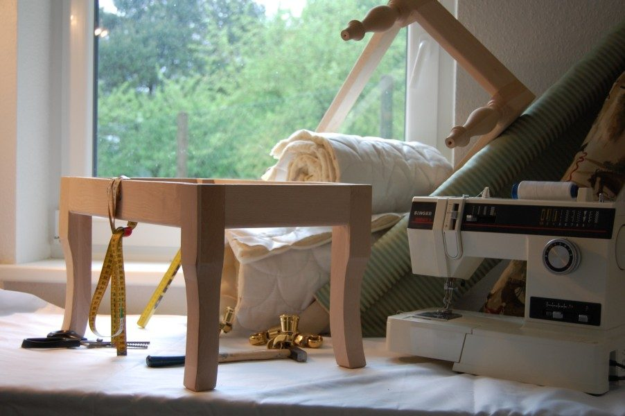
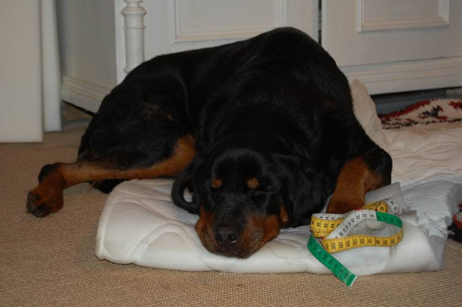
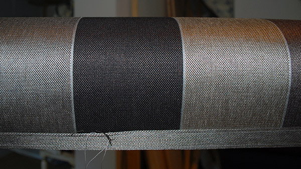
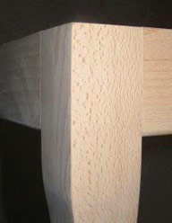
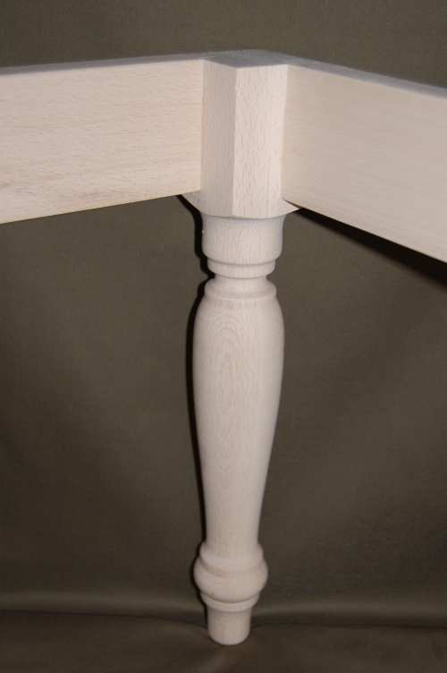
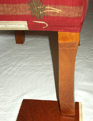
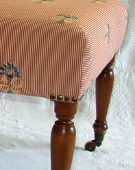
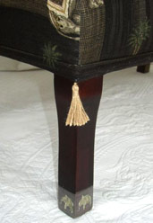
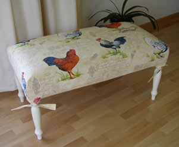
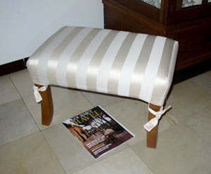

GoldmannFootstools
info@footstools.deTel: 0151 - 681 856 50
 Country Line
Country Line City Forum
City Forum Signature Edition
Signature Edition Stoffe
Stoffe Hochzeitsbank
Hochzeitsbank
Maßarbeit
Jeder Footstool wird nach IHREN Wünschen gefertigt.

Herstellung
Unsere Footstools sind belastbar und auf Langlebigkeit ausgerichtet. Die Basis dafür bilden Rahmen und Beine aus Buchenholz.
Die Beine sind mit dem Rahmen verzapft. (und nicht angeschraubt)!

Die Verarbeitung
Die Beine werden im gewünschten Farbton gebeizt. Die hochwertige Polsterarbeit ist auf beständige Festigkeit ausgerichtet.
ALLE Arbeiten werden von HAND ausgeführt. ... mit Auge für's Detail
Hussen
Frische Ideen - clever umgesetzt. Schutz und Tapetenwechsel. Weitere Beispiel finden Sie hier.
Jeder Footstool wird nach IHREN Wünschen gefertigt.



Herstellung
Unsere Footstools sind belastbar und auf Langlebigkeit ausgerichtet. Die Basis dafür bilden Rahmen und Beine aus Buchenholz.
Die Beine sind mit dem Rahmen verzapft. (und nicht angeschraubt)!


Die Verarbeitung
Die Beine werden im gewünschten Farbton gebeizt. Die hochwertige Polsterarbeit ist auf beständige Festigkeit ausgerichtet.
ALLE Arbeiten werden von HAND ausgeführt. ... mit Auge für's Detail



Hussen
Frische Ideen - clever umgesetzt. Schutz und Tapetenwechsel. Weitere Beispiel finden Sie hier.

